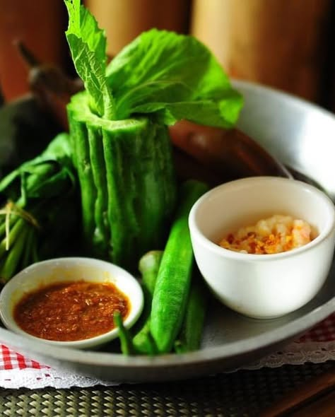
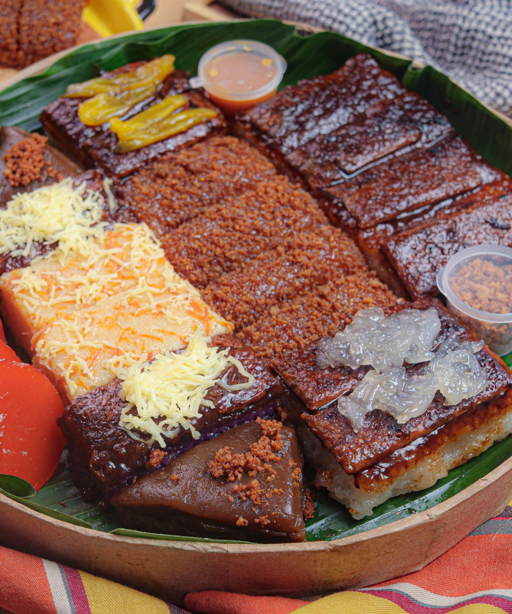

CRADLE OF PHILIPPINE ART


Port in Binangonan, Rizal. On the way to Talim Island
THE MUNICIPALITY OF BINANGONAN
Experience the charm of Binangonan as you explore its scenic landscapes, and the local traditions.

Municipality in Rizal Province
Binangonan is one of the fourteen municipalities of Rizal. It is triangular in shape and lies between the foothills of Sierra Madre Mountain and the northeastern part of Laguna de Bay. The municipality is bounded on the north by Angono, on the east by Cardona, on the northeast by Morong and Teresa and on the southeast by Laguna de Bay. The town is approximately situated fifteen (15) kilometers southeast of the Provincial Capitol of Rizal. The seat of Government is located in Barangay Calumpang along the Manila East Road and approximately six (6) kilometers after the boundary of Angono and five (5) kilometers after from Cardona.
Binangonan has a total land area of SEVEN THOUSAND TWO HUNDRED (7,270) HECTARES. The area of the mainland is 5,820.55 hectares while Talim Island is 1,449.45 hectares. Binangonan ranks the fifth biggest in the province in terms of area.
View in Google Maps >>>
The festivals of Binangonan showcase the town’s vibrant culture, traditions, and strong sense of community. Celebrated near the shores of Laguna de Bay, these festivals highlight the town’s local heritage, creativity, and devotion through colorful performances, music, and community gatherings. Through these celebrations, the people of Binangonan proudly share their traditions and cultural identity with visitors and future generations.

Caru-Caruhan Festival

Buro (Fermented Rice)
Giwang-Giwang

Mang Domeng's Bibingka

Libid Grand Santa Cruzan
Annual Festival in Binangonan, Rizal
Rich in historic past, Binangonan originated in the word “Bangon” which signified escalation and ascension in every downfall of its natives. Thus implicating that its people were notable heroes stood up to continue their fights and be of triumph over their battles. Bordered by long coastline, its richness in aquatic resources led its natives in establishing chains of fishing industry not only in the town but in the province as a whole. Plenteous as its mountainous space; Binangonan is blessed by its bamboo orchards or “Kawayan” which developed its people’s craftsmanship and directed them in the export industry of the country, hence making world-class bamboo product sold at the global market.
Binangonan as a nestle of lake “lawa” and bamboo “kawayan” introduces to the world its “BINAngonan sa LAwa at kawaYAN” or “BINALAYAN” Festival which mirrored its various historic, pulsating and highly entertaining celebration which showcases bamboo products and other marine merchandises exclusively made at the leading edge of Binangonan’s culture and economy. Unfold Binangonan and embark into an enchanting side trip at Binalayan Festival.
View more of the festivals and traditions >>>

BURO (FERMENTED RICE)

Buro is a traditional Filipino fermented rice delicacy, particularly popular in Binangonan, made by fermenting cooked rice with raw fish or shrimp, salt, and sometimes garlic or ginger for 3–7 days. It has a pungent aroma and sour, savory flavor, usually sautéed with garlic, onions, and tomatoes before serving alongside steamed veggies (mustasa) and grilled fish.
MANG DOMENG'S BIBINGKA

Mang Domeng's Bibingka - Binangonan is a local kakanin shop known for serving freshly made Filipino delicacies, especially its signature bibingka and other traditional rice cakes. The shop offers a variety of sweet treats such as biko, kalamay, and cassava, bringing the comforting taste of classic Filipino merienda that many locals enjoy sharing with family and friends.
Binangonan is a scenic lakeside town in Rizal Province known for its rich culture, natural beauty, and historical landmarks. Located along the shores of Laguna de Bay, the municipality offers visitors a relaxing environment with beautiful landscapes and cultural heritage. Tourists are attracted to its historical sites such as the Angono-Binangonan Petroglyphs, which are considered the oldest known artworks in the Philippines. With its peaceful lakeside views, historical treasures, local festivals, and warm community.

Santa Ursula Parish Church

Thunderbolt

Kalbaryo

Angono-Binangonan Petroglyphs

Island in Binangonan Rizal
A dagger-shaped island at the heart of Laguna de Bay, Talim Island is endowed with mountains and hills such as Susong Dalaga and Dolores Hills. Islets include Pulong Ithan, Three Islets of Bunga, Malahi and Pulong Gitna. Hot springs in Ginoong Sanay, Tabon and Binitagan also exist. There are also fish pens located at the center of the lake and the water nearer the shore were developed for swimming, boating, sailing, water sports and other activities.
Talim Island is a 15-km long, spearhead-shaped island in the center of Laguna de Bay, shared by Binangonan (17 barangays) and Cardona (7 barangays) in Rizal, Philippines. It features the beginner-friendly hiking destination Mt. Tagapo (often called Susong Dalaga), scenic rolling hills, and a local economy driven by fishing and bamboo crafts.
View more tourist attractions >>>
Binangonan was liberated from the Japanese forces in February 25, 1945, the feast day of the patroness of the town, Sta. Ursula. The Japanese’ plan to burn the town was prevented by the timely arrival of American forces on the eve of the feast day. The local guerillas, with Major Ceñido deploying his men in Bunot Mountain, prevented the escape of Japanese forces. The Japanese peacefully retreated and pulled their forces out.

Its name in English means, “The first established town around the lake”. A first class municipality, Binangonan lies between the foothills of Sierra Madre and the shores of Laguna de Bay. It is composed of 23 mainland and 17 island barangays. This town was separated and became an independent parish in 1621 through the initiatives of the Franciscan missionaries. The town was established in 1737 and conquered by the Spaniards in 1763. It became a town in 1900 during the American colonial period. Binangonan’s major historical landmark is the 200-year-old Santa Ursula Parish, located at the heart of the town.
View more of the history of Binangonan Rizal >>>